For this assignment, we will explore how water consumption varies by median household income across U.S. counties for the year 2015, on a per capita basis.
Focusing on three sectors: domestic, industrial, and irrigation. The research question is: How is 2015 per capita water use in domestic, industrial, and irrigation sectors correlated with median household income across U.S. counties?
The plan is as follows:
Clean and merge both datasets.
Compute per capita water use for each sector.
Conduct correlation analysis between per capita water use and median household income across sectors.
For income data, Census Data on Income and Poverty. I chose the American Community Survey 5-year estimates for the analysis as the 5-year estimate gives more reliable data for all US counties, unlike the 1-year estimate as they provide the most current data but have a smaller sample size.
Reading the Datasets
library(tidyverse)
── Attaching core tidyverse packages ──────────────────────── tidyverse 2.0.0 ──
✔ dplyr 1.1.3 ✔ readr 2.1.4
✔ forcats 1.0.0 ✔ stringr 1.5.0
✔ ggplot2 3.4.4 ✔ tibble 3.2.1
✔ lubridate 1.9.3 ✔ tidyr 1.3.0
✔ purrr 1.0.2
── Conflicts ────────────────────────────────────────── tidyverse_conflicts() ──
✖ dplyr::filter() masks stats::filter()
✖ dplyr::lag() masks stats::lag()
ℹ Use the conflicted package (<http://conflicted.r-lib.org/>) to force all conflicts to become errors
library(readxl) library(ggside)
Registered S3 method overwritten by 'ggside':
method from
+.gg ggplot2
library(ggplot2)
# Reading the datasets and making sure the strings are not automatically converted to factors for text manipulation if neededwaterusage <-read.csv("usco2015v2.0.csv", skip =1)incomedata <-read.csv("ACSST5Y2015.S1901-Data.csv", skip =1, stringsAsFactors =FALSE)# waterdatadictionary <- read_excel("usco2015v2.0.xlsx", sheet = "DataDictionary") waterusage <- waterusage %>%mutate(FIPS_Code =str_pad(FIPS, width =5, pad ="0") ) # Create a new column 'FIPS_Code' by padding 'FIPS' values to 5 characters with zeros
To calculate the median household income
In the income data, we have an “Estimate” and a “Margin of Error.” The margin of error provides a range within which the true value highly likely falls. For a precise analysis, we will use both in calculating the lower and upper bounds of the estimated median income. Then these bounds can be averaged to create a single, more robust figure that accounts for the estimated range of incomes.
This approach will account for the variability in the estimates and present a more accurate range of the median income values across different counties.
# Checking data type of variables of interestclass(incomedata$`Households..Estimate..Median.income..dollars.`)
# Convert character columns to numericincomedata$`Households..Estimate..Median.income..dollars.`<-as.numeric(as.character(incomedata$`Households..Estimate..Median.income..dollars.`))
Min. 1st Qu. Median Mean 3rd Qu. Max. NA's
110 1635 2406 2850 3446 21355 1
# We have one NA in each, so I will just leave it# Calculating the lower and upper bounds for median income using the margin of error# Then, averaging these bounds to create a single measure of median income.# Calculate the lower boundincomedata$Lower_Bound <- incomedata$`Households..Estimate..Median.income..dollars.`- incomedata$`Households..Margin.of.Error..Median.income..dollars.`# Calculate the upper boundincomedata$Upper_Bound <- incomedata$`Households..Estimate..Median.income..dollars.`+ incomedata$`Households..Margin.of.Error..Median.income..dollars.`# Average the lower and upper bounds to get a single measure of median incomeincomedata$Avg_Median_Income <- (incomedata$Lower_Bound + incomedata$Upper_Bound) /2
Cleaning income dataset to focus on variables of interest
# Keeping the needed columns in incomedatacleaned_incomedata <- incomedata %>%select(Geography, `Geographic.Area.Name`, Avg_Median_Income)# Cleaning the Geographic.Area.Name to remove the state name and comma and keep county onlycleaned_incomedata$`Geographic.Area.Name`<-gsub(",.*$", "", cleaned_incomedata$`Geographic.Area.Name`)# Renaming columns for better readabilitycleaned_incomedata <- cleaned_incomedata %>%rename(FIPS = Geography,County =`Geographic.Area.Name`,Median_Income = Avg_Median_Income )# Remove prefix and extract relevant FIPS# The ? in the regular expression makes the last "0" optionallibrary(stringr)cleaned_incomedata$FIPS <-str_replace_all(cleaned_incomedata$FIPS, "0500000US0?", "")
Cleaning Water Usage Dataset to focus on variables of interest
Domestic Use:
Domestic_Total_Self_Supplied (DO.WFrTo): The total self-supplied withdrawals, which is a comprehensive measure of domestic water use without public supply, meaning it’s not provided by a public utility. It gives an idea of how much water households are sourcing themselves. Example: Wells or streams.
Domestic_Per_Capita_Self_Supplied (DO.SSPCp): This is the per capita self-supplied water use. It’s already normalized by population and will be useful for direct comparisons between counties of different sizes.As in each person self-supplies an average of 20 gallons/day.
Domestic_Per_Capita_Publicly_Supplied (DO.PSPCp): This is the per capita use for publicly supplied water, another metric normalized by population.
Domestic_Total_Use (DO.WDelv): This variable combines both self-supplied and publicly supplied water to give a complete measure of domestic water use.
Depending on the granularity of the analysis, we can either focus on the most comprehensive measure (DO-WDelv) or break it down to see if self-supplied vs. publicly supplied makes a difference in the correlation with income (DO-SSPCp and DO-PSPCp).
Industrial Use:
Industrial_Total_Groundwater (IN.WGWTo): This measures the total amount of groundwater used by industries.
Industrial_Total_SurfaceWater (IN.WSWTo): Total surface-water withdrawals, including both fresh and saline water. Measuring how much surface water industries are self-supplying.
Industrial_Total_Water (IN.Wtotl): This combines the above two to give a complete measure of industrial water use.
Irrigation Use:
Total_Irrigation_Withdrawal (IR.WFrTo): Total water withdrawals for irrigation, covering both groundwater and surface water.
Reclaimed_Water_Irrigation (IR.RecWW): How much reclaimed water (treated wastewater) is being used, which could be an interesting aspect related to sustain
Total_Acres_Irrigated (IR.IrTot): Total acres irrigated, useful for understanding the scale of irrigation in different counties.
Crop_Irrigation_Withdrawal (IC.WFrTo): Specifies the total water withdrawals specifically for crop irrigation.
Golf_Irrigation_Withdrawal (IG.WFrTo): This measures the water withdrawals for golf course irrigation, giving an idea of non-agricultural irrigation demands.
Measuring units
Median household income in dollars.
Water withdrawal and usage variables, measured in Million Gallons per Day (Mgal/d).
Per capita water usage rates, measured in gallons/day.
Areas that are irrigated, measured in thousand acres.
# Check for duplicate FIPS in each data framesum(duplicated(cleaned_waterusage$FIPS))
[1] 0
sum(duplicated(cleaned_incomedata$FIPS))
[1] 0
# Check the data type of FIPS in both data framesclass(cleaned_waterusage$FIPS)
[1] "integer"
class(cleaned_incomedata$FIPS)
[1] "character"
# Converting FIPS in incomedata to integercleaned_incomedata$FIPS <-as.integer(cleaned_incomedata$FIPS)
Warning: NAs introduced by coercion
# Merge incomedata and cleaned_waterusage by FIPS using inner joinmerged_data <-inner_join(cleaned_waterusage, cleaned_incomedata, by ="FIPS")# Check the first few rows of the merged datahead(merged_data)
# Convert all columns to numeric except for State_Abbrev, County, County_Name, and FIPS_Codemerged_data_numeric <- merged_data %>%mutate(across(-c(State_Abbrev, County, County_Name, FIPS_Code), as.numeric))
Warning: There were 5 warnings in `mutate()`.
The first warning was:
ℹ In argument: `across(-c(State_Abbrev, County, County_Name, FIPS_Code),
as.numeric)`.
Caused by warning:
! NAs introduced by coercion
ℹ Run `dplyr::last_dplyr_warnings()` to see the 4 remaining warnings.
# Check to see if the conversion workedstr(merged_data_numeric)
'data.frame': 3220 obs. of 22 variables:
$ State_Abbrev : chr "AL" "AL" "AL" "AL" ...
$ State_FIPS : num 1 1 1 1 1 1 1 1 1 1 ...
$ County_Name : chr "Autauga County" "Baldwin County" "Barbour County" "Bibb County" ...
$ County_FIPS : num 1 3 5 7 9 11 13 15 17 19 ...
$ FIPS : num 1001 1003 1005 1007 1009 ...
$ Data_Year : num 2015 2015 2015 2015 2015 ...
$ FIPS_Code : chr "01001" "01003" "01005" "01007" ...
$ Total_Population : num 55.3 203.7 26.5 22.6 57.7 ...
$ Domestic_Total_Self_Supplied : num 0.38 2.14 0.12 0.16 0.86 0.07 0.27 0.44 0.48 0.49 ...
$ Domestic_Per_Capita_Self_Supplied : num 60 74 63 98 67 95 81 71 58 60 ...
$ Domestic_Per_Capita_Publicly_Supplied: num 55 73 58 86 62 89 80 69 67 61 ...
$ Domestic_Total_Use : num 3.09 14.92 1.54 1.97 3.65 ...
$ Industrial_Total_Groundwater : num 1.83 0 1.5 0 0 0 0.2 1.15 0 0 ...
$ Industrial_Total_SurfaceWater : num 33 0 0 0 0 ...
$ Industrial_Total_Water : num 34.8 0 1.5 0 0 0 0.2 1.15 0 0 ...
$ Total_Irrigation_Withdrawal : num 3.52 58.28 2.96 0.19 1.08 ...
$ Reclaimed_Water_Irrigation : num NA NA NA NA NA NA NA NA NA NA ...
$ Total_Acres_Irrigated : num 2.26 20.66 4.53 0.16 0.94 ...
$ Crop_Irrigation_Withdrawal : num 3.36 53.95 2.49 0.03 0.35 ...
$ Golf_Irrigation_Withdrawal : num 0.16 4.33 0.47 0.16 0.73 0.16 0.98 1.76 0.16 0.16 ...
$ County : chr "Autauga County" "Baldwin County" "Barbour County" "Bibb County" ...
$ Median_Income : num 51281 50254 32964 38678 45813 ...
# Check for missing values after conversioncolSums(is.na(merged_data_numeric))
# Reclaimed_Water_Irrigation has 2041 out of 3220 observations NAs# Crop_Irrigation_Withdrawal & Golf_Irrigation_Withdrawaleach has 1134 NAs# Domestic_Per_Capita_Self_Supplied has 190NAs# Median_Income has only 1# Remove rows where any of the specified columns have NA valuescleaned_merged_data <- merged_data_numeric %>%drop_na(Domestic_Per_Capita_Self_Supplied, Domestic_Per_Capita_Publicly_Supplied, Median_Income)
LIST OF PLOTS
Scatterplots:
library(ggplot2)# Example with Domestic_Total_Self_Suppliedggplot(merged_data_numeric, aes(x = Median_Income, y = Domestic_Total_Self_Supplied)) +geom_point() +ggtitle("Scatterplot of Median Income vs Domestic Total Self-Supplied Water")
# Example with Domestic_Total_Useggplot(merged_data_numeric, aes(x = Median_Income, y = Domestic_Total_Use)) +geom_point() +ggtitle("Scatterplot of Median Income vs Domestic Total Use")
# Example with Domestic_Per_Capita_Self_Suppliedggplot(merged_data_numeric, aes(x = Median_Income, y = Domestic_Per_Capita_Self_Supplied)) +geom_point() +ggtitle("Scatterplot of Median Income vs Domestic Per Capita Self-Supplied Water")
For plotting water usage variables by county, sorted by the county
x = county (sorted), y = [water usage]
# Example with Domestic_Total_Self_Suppliedggplot(merged_data_numeric, aes(x =reorder(FIPS, -Domestic_Total_Self_Supplied), y = Domestic_Total_Self_Supplied)) +geom_col(aes(fill=Median_Income)) +ggtitle("Column Plot of Domestic Total Self-Supplied Water by County") +theme(axis.text.x =element_blank())+scale_fill_continuous(low="lightblue", high ="red")
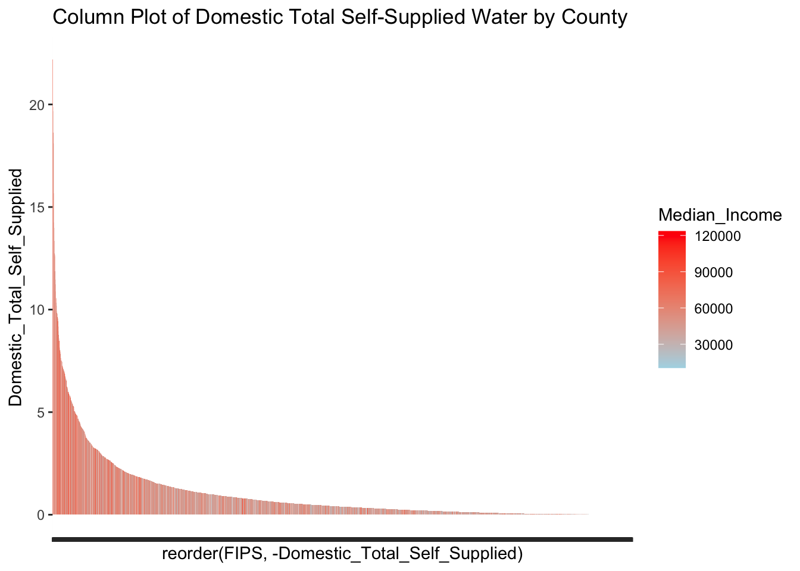
Stacked column plots, color by median income:
# Example with Domestic and Industrial Total Water Useggplot(merged_data_numeric, aes(x =reorder(FIPS, Domestic_Total_Use), fill = Total_Population)) +geom_bar(aes(y = Domestic_Total_Use), stat ="identity") +ggtitle("Stacked Column Plot by County, Colored by Median Income") +theme(axis.text.x =element_blank())+scale_fill_continuous(low="lightblue", high ="red")
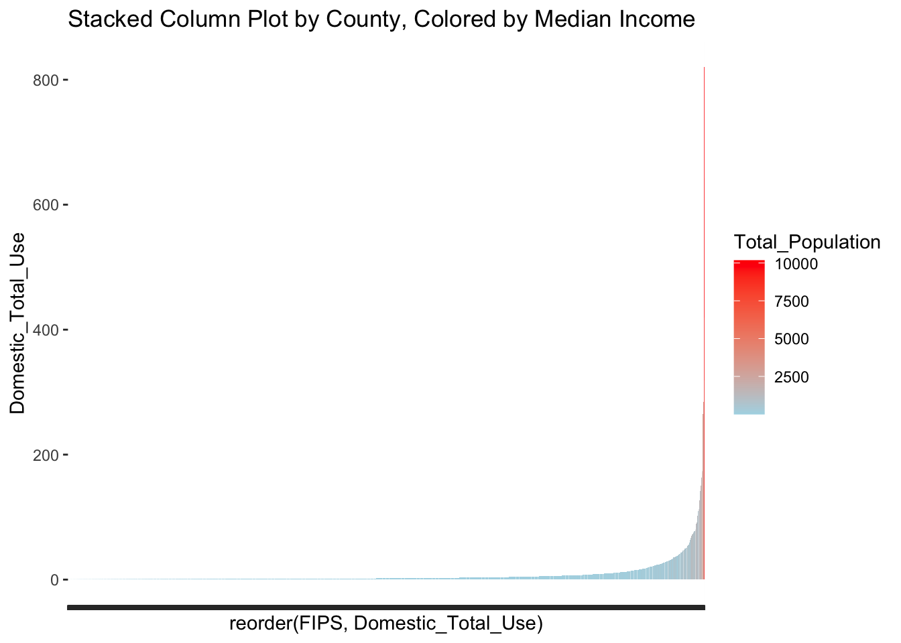
Per capita consumption of each category
library(tidyquant)
Loading required package: PerformanceAnalytics
Loading required package: xts
Loading required package: zoo
Attaching package: 'zoo'
The following objects are masked from 'package:base':
as.Date, as.Date.numeric
######################### Warning from 'xts' package ##########################
# #
# The dplyr lag() function breaks how base R's lag() function is supposed to #
# work, which breaks lag(my_xts). Calls to lag(my_xts) that you type or #
# source() into this session won't work correctly. #
# #
# Use stats::lag() to make sure you're not using dplyr::lag(), or you can add #
# conflictRules('dplyr', exclude = 'lag') to your .Rprofile to stop #
# dplyr from breaking base R's lag() function. #
# #
# Code in packages is not affected. It's protected by R's namespace mechanism #
# Set `options(xts.warn_dplyr_breaks_lag = FALSE)` to suppress this warning. #
# #
###############################################################################
Attaching package: 'xts'
The following objects are masked from 'package:dplyr':
first, last
Attaching package: 'PerformanceAnalytics'
The following object is masked from 'package:graphics':
legend
Loading required package: quantmod
Loading required package: TTR
Registered S3 method overwritten by 'quantmod':
method from
as.zoo.data.frame zoo
# Scatterplot for Median Income vs Domestic_Total_Useggplot(merged_data_numeric, aes(x=Median_Income, y = Domestic_Total_Use)) +geom_point() +labs(title ="Scatterplot of Median Income vs Domestic Total Water Use",x ="Median Income", y ="Domestic Total Water Use")
# Scatterplot for Median Income vs Total_Irrigation_Withdrawalggplot(merged_data_numeric, aes(x=Median_Income, y = Total_Irrigation_Withdrawal)) +geom_point() +labs(title ="Scatterplot of Median Income vs Total Irrigation Withdrawal",x ="Median Income", y ="Total Irrigation Withdrawal")
# Scatterplot for log10(Total_Population) vs log10(Domestic_Total_Use)ggplot(merged_data_numeric, aes(x=log10(Total_Population), y =log10(Domestic_Total_Use))) +geom_point() +geom_smooth(aes(color =NULL), se=TRUE) +geom_xsidedensity(aes(y =after_stat(density)),alpha =0.5, size =1, position ="stack" ) +geom_ysidedensity(aes(x =after_stat(density)),alpha =0.5, size =1, position ="stack" ) +scale_color_tq() +scale_fill_tq() +theme_tq() +labs(title ="Log-Transformed Scatterplot of Population vs Domestic Total Water Use",subtitle ="ggside density",x ="Log10(Total Population)", y ="Log10(Domestic Total Water Use)") +theme(ggside.panel.scale.x =0.4,ggside.panel.scale.y =0.4 )
Warning: Using `size` aesthetic for lines was deprecated in ggplot2 3.4.0.
ℹ Please use `linewidth` instead.
`geom_smooth()` using method = 'gam' and formula = 'y ~ s(x, bs = "cs")'
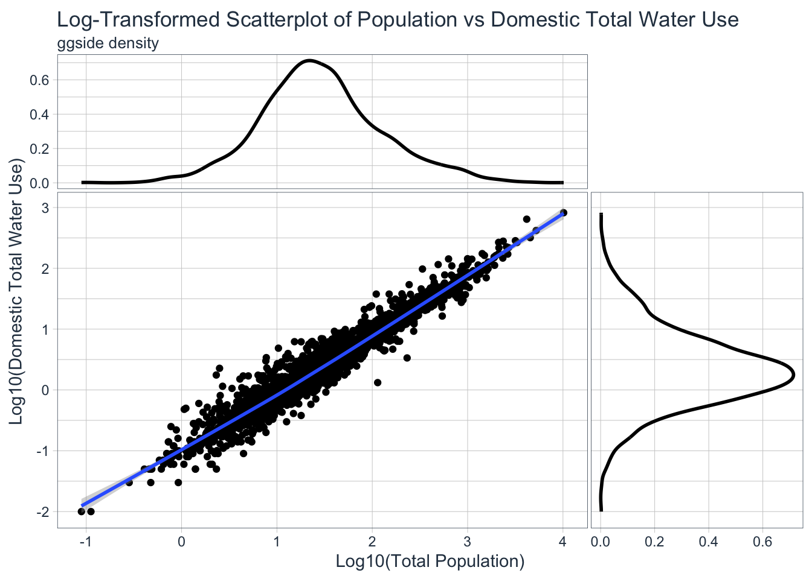
Map (Choropleth)
Total Dometsic Self Supplied
library(sf)
Linking to GEOS 3.11.0, GDAL 3.5.3, PROJ 9.1.0; sf_use_s2() is TRUE
## first plot# Data loading and preprocessingus_counties <-st_read("cb_2018_us_county_20m.shp")
Reading layer `cb_2018_us_county_20m' from data source
`/Users/barrierobison/Documents/GitHub/Marwater/cb_2018_us_county_20m.shp'
using driver `ESRI Shapefile'
Simple feature collection with 3220 features and 9 fields
Geometry type: MULTIPOLYGON
Dimension: XY
Bounding box: xmin: -179.1743 ymin: 17.91377 xmax: 179.7739 ymax: 71.35256
Geodetic CRS: NAD83
us_counties2 <- us_counties %>%mutate(FIPS =as.numeric(GEOID))%>%left_join(merged_data_numeric, by ="FIPS")ggplot() +geom_sf(data = us_counties2, aes(fill = Median_Income), color =NA) +scale_fill_viridis_c() +# or use any other color scale you prefertheme_minimal() +labs(fill ="Median Income",title ="Choropleth Map of Domestic Total Self-Supplied Water by County")
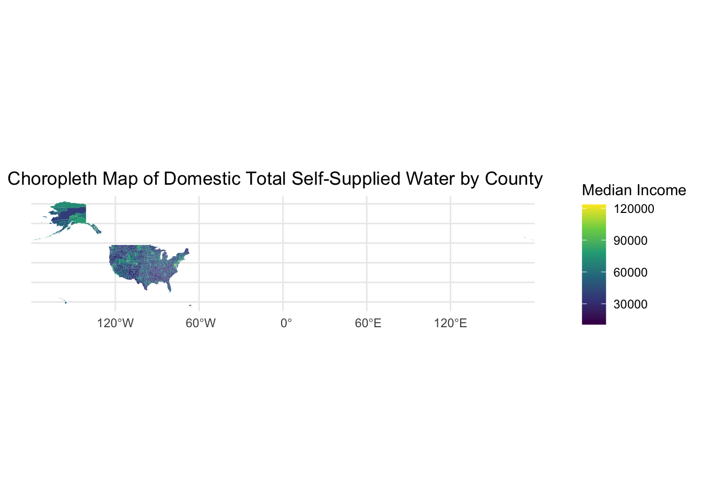
p <-ggplot() +geom_sf(data = us_counties2, aes(fill = Domestic_Total_Self_Supplied), color =NA) +scale_fill_viridis_c() +theme_minimal() +labs(fill ="Domestic Total Self-Supplied",title ="Choropleth Map of Domestic Total Self-Supplied Water by County")# Save the plot with a width of 10 inches and a height of 5 inchesggsave("your_plot.png", plot = p, width =10, height =5)# Create the plot with zoom on contiguous U.S.p_contiguous_us <-ggplot() +geom_sf(data = us_counties2, aes(fill = Domestic_Total_Self_Supplied), color =NA) +scale_fill_viridis_c() +theme_minimal() +labs(fill ="Domestic Total Self-Supplied",title ="Choropleth Map of Domestic Total Self-Supplied Water by County") +coord_sf(xlim =c(-125, -66), ylim =c(24, 49), expand =FALSE)# Display the mapprint(p_contiguous_us)
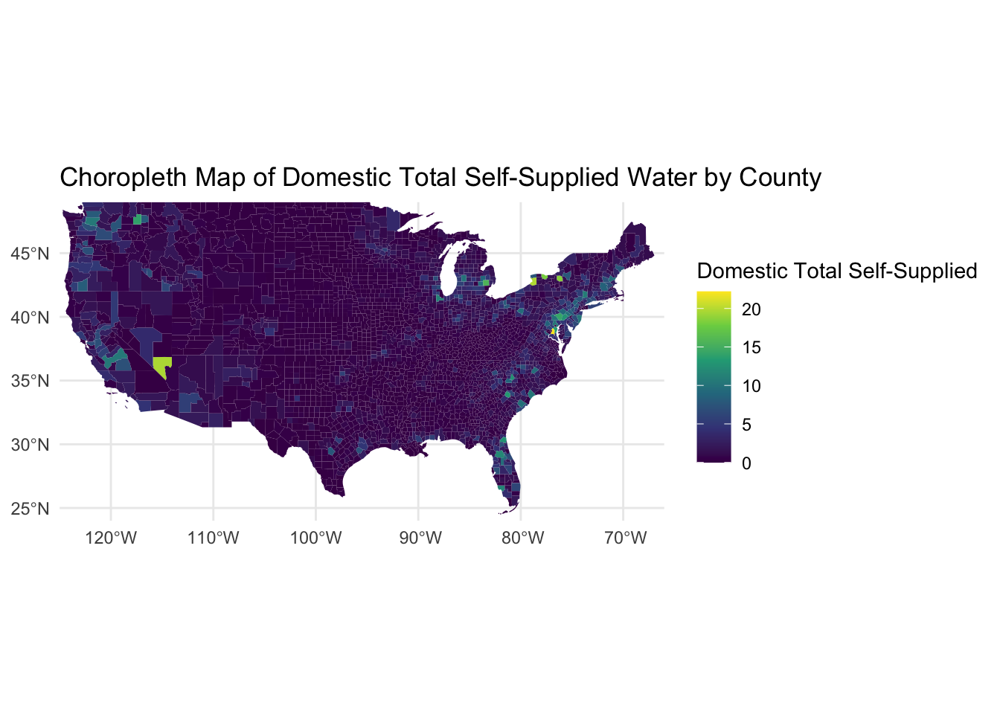
# Save the plot with desired dimensionsggsave("contiguous_us_plot_D_S.png", plot = p_contiguous_us, width =10, height =5)
Highest county in total self-supplied withdrawals
# Sorting the data frame based on Domestic_Total_Self_Supplied in descending ordersorted_us_counties_by_domestic_self_supplied <- us_counties2 %>%arrange(desc(Domestic_Total_Self_Supplied))# Checking the first row to get the county with the highest Domestic_Total_Self_Suppliedhighest_self_supplied_county_row <- sorted_us_counties_by_domestic_self_supplied[1, ]# Display the county name and the valuehighest_self_supplied_county_name <- highest_self_supplied_county_row$NAMEhighest_self_supplied_value_mgal <- highest_self_supplied_county_row$Domestic_Total_Self_Suppliedcat("The county with the highest Domestic_Total_Self_Supplied is", highest_self_supplied_county_name, "with a value of", highest_self_supplied_value_mgal, "million gallons per day.")
The county with the highest Domestic_Total_Self_Supplied is Prince George's with a value of 22.19 million gallons per day.
Total Domestic Use Map
# Create the plot with zoom on contiguous U.S. focusing on Total Domestic Usep_contiguous_us_Domestic_Total_Use <-ggplot() +geom_sf(data = us_counties2, aes(fill = Domestic_Total_Use), color =NA) +scale_fill_viridis_c( ) +theme_minimal() +labs(fill ="Domestic Total Use",title ="Choropleth Map of Domestic Total Use by County") +coord_sf(xlim =c(-125, -66), ylim =c(24, 49), expand =FALSE)# Display the mapprint(p_contiguous_us_Domestic_Total_Use)
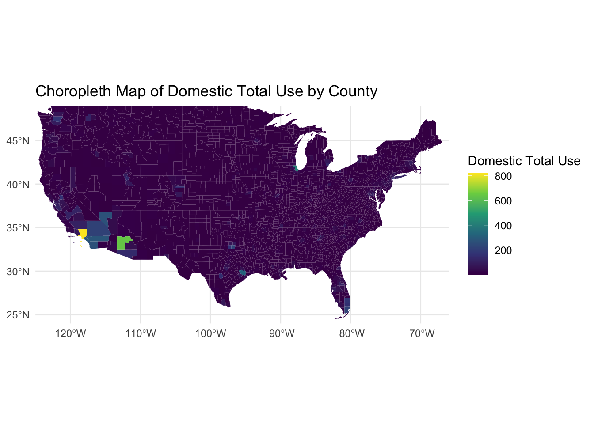
# Save the plot with your desired dimensionsggsave("contiguous_us_plot_Domestic_Total_Use.png", plot = p_contiguous_us_Domestic_Total_Use, width =10, height =5)
us_counties3 <- us_counties %>%mutate(FIPS =as.numeric(GEOID))%>%left_join(cleaned_waterusage, by ="FIPS")ggplot(us_counties3, aes(x=Domestic_Total_Use))+geom_histogram(binwidth =10)
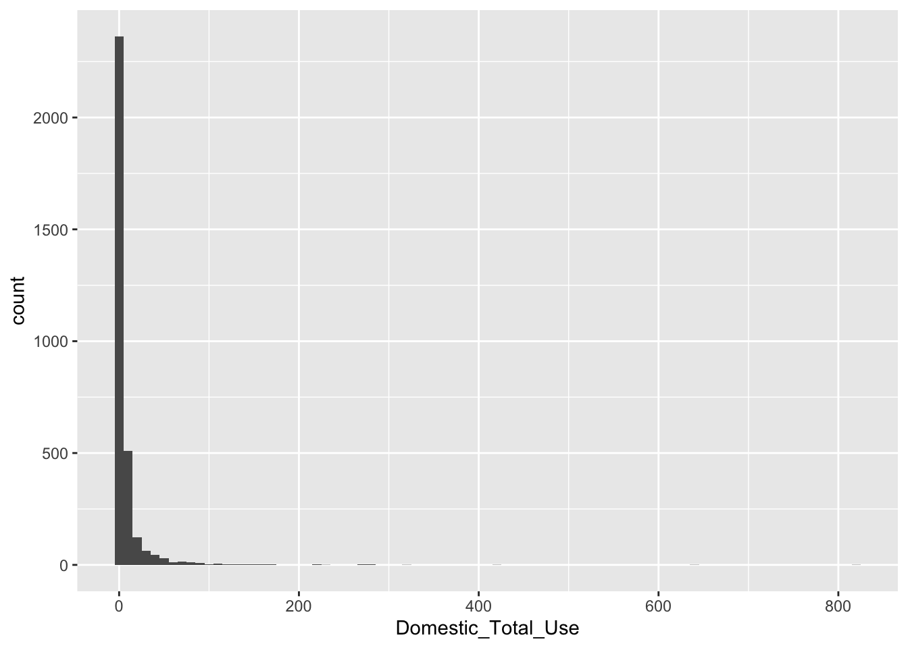
# Create the plot with zoom on contiguous U.S.p_contiguous_us_total <-ggplot() +geom_sf(data = us_counties3, aes(fill = Domestic_Total_Use), color =NA) +scale_fill_viridis_c() +theme_minimal() +labs(fill ="Domestic_Total_Use",title ="Choropleth Map of Domestic Total Use Water by County") +coord_sf(xlim =c(-125, -66), ylim =c(24, 49), expand =FALSE)# Display the mapprint(p_contiguous_us_total)
# Save the plot with desired dimensionsggsave("contiguousssss.png", plot = p_contiguous_us_total, width =10, height =5)thristy <- us_counties3 %>%arrange(desc(Domestic_Total_Use)) %>%head(5)
Using breakpoints for better visualization
# Histogram of Domestic_Total_Useggplot(us_counties3, aes(x = Domestic_Total_Use)) +geom_histogram(binwidth =10, fill ="blue", alpha =0.7) +# binwidth controls the width of the barslabs(title ="Histogram of Domestic Total Use",x ="Domestic Total Use",y ="Frequency") +theme_minimal()
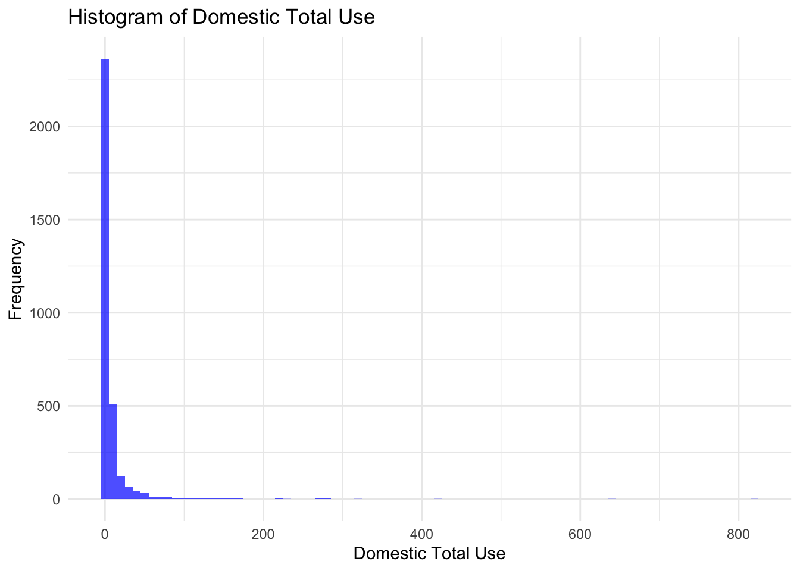
# Using log transformationggplot(us_counties3, aes(x = Domestic_Total_Use)) +geom_histogram(binwidth =1, fill ="blue", alpha =0.7) +labs(title ="Log-transformed Histogram of Domestic Total Use",x ="Domestic Total Use",y ="Frequency") +scale_x_log10() +theme_minimal()
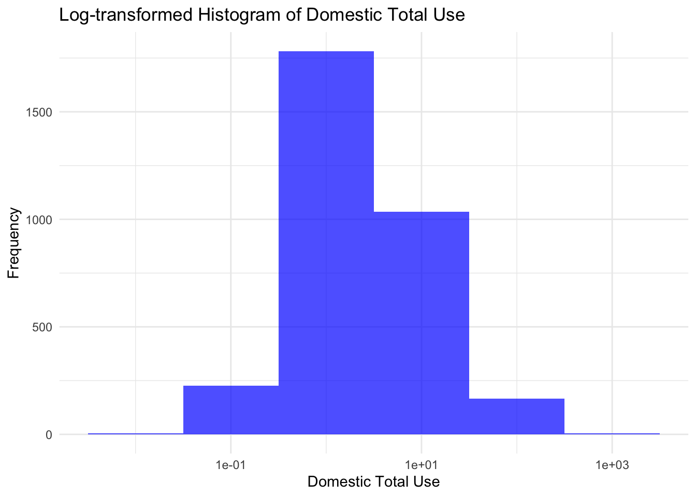
library(viridis)
Loading required package: viridisLite
# Add the log-transformed Domestic Total Use to the dataus_counties3$Domestic_Total_Use_log <-log1p(us_counties3$Domestic_Total_Use)# Create the plotp_contiguous_us_total <-ggplot() +geom_sf(data = us_counties3, aes(fill = Domestic_Total_Use_log), color =NA) +scale_fill_viridis_c(breaks =c(5, 20, 100, 500, max(us_counties3$Domestic_Total_Use)),labels =c("Low", "Medium-Low", "Medium", "Medium-High", "High"),guide =guide_colorbar(title ="Value") ) +theme_minimal() +labs(fill ="Domestic_Total_Use",title ="Choropleth Map of Domestic Total Use Water by County") +coord_sf(xlim =c(-125, -66), ylim =c(24, 49), expand =FALSE)# Display the mapprint(p_contiguous_us_total)
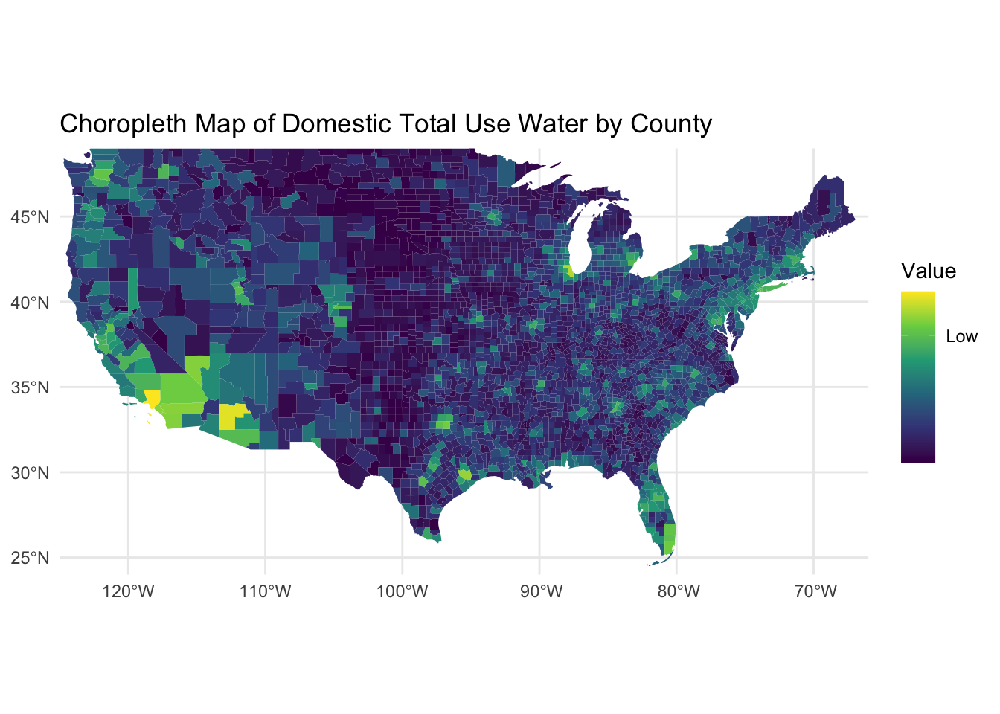
Using quantiles instead of random breakpoints
# Compute quantile breaks for Domestic_Total_Use_logbreaks_quantiles <-quantile(us_counties3$Domestic_Total_Use_log, probs =c(0, 0.2, 0.4, 0.6, 0.8, 1))# Plot the choropleth map with the new breakpointsp_contiguous_us_total_quantiles <-ggplot() +geom_sf(data = us_counties3, aes(fill = Domestic_Total_Use_log), color =NA) +scale_fill_viridis_c(breaks = breaks_quantiles[-1], # Omit the first value (0 quantile) for breakslabels =c("Lowest 20%", "20%-40%", "40%-60%", "60%-80%", "Top 20%"),guide =guide_colorbar(title ="Value") ) +theme_minimal() +labs(fill ="Log(Domestic_Total_Use)",title ="Choropleth Map of Log Transformed Domestic Total Use Water by County Quantiles") +coord_sf(xlim =c(-125, -66), ylim =c(24, 49), expand =FALSE)# Display the mapprint(p_contiguous_us_total_quantiles)
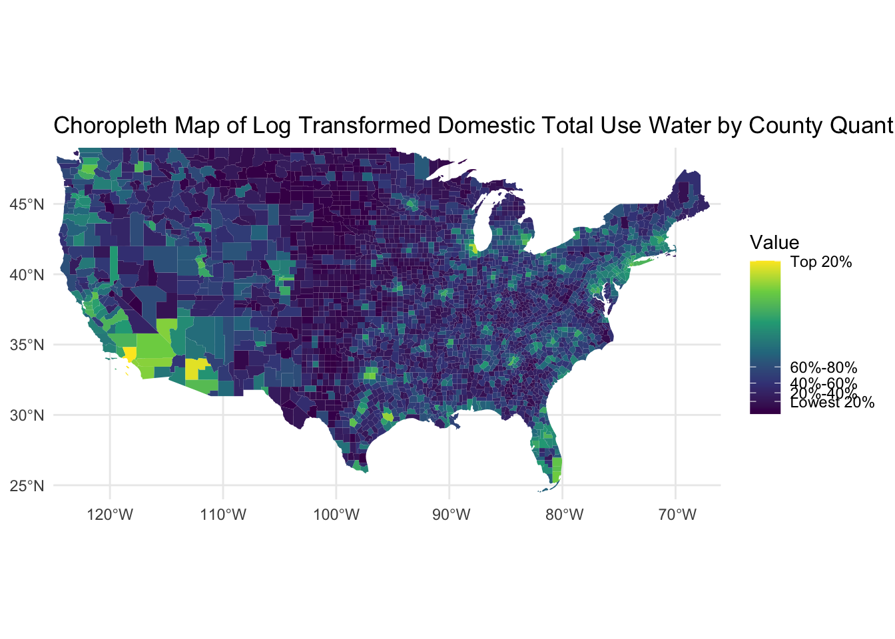
It seems the majority of counties use water in the mid-range (40%-80%). There are some noticeable patches, especially in the West and Southwest, where water usage is in the top 20%.
# Compute quantile breaks for Domestic_Total_Use_logbreaks_quantiles <-quantile(us_counties3$Domestic_Total_Use_log, probs =c(0, 0.2, 0.4, 0.6, 0.8, 1))# Plot the choropleth map with the new breakpointsp_contiguous_us_total_percapita <-ggplot() +geom_sf(data = us_counties3, aes(fill =log(Domestic_Total_Use/Total_Population)), color =NA) +scale_fill_viridis_c(breaks = breaks_quantiles[-1], # Omit the first value (0 quantile) for breakslabels =c("Lowest 20%", "20%-40%", "40%-60%", "60%-80%", "Top 20%"),guide =guide_colorbar(title ="Value") ) +theme_minimal() +labs(fill ="Log(Domestic_Total_Use)",title ="Choropleth Map of Log Transformed per capita Domestic Total Use Water by County Quantiles") +coord_sf(xlim =c(-125, -66), ylim =c(24, 49), expand =FALSE)# Display the mapprint(p_contiguous_us_total_percapita)
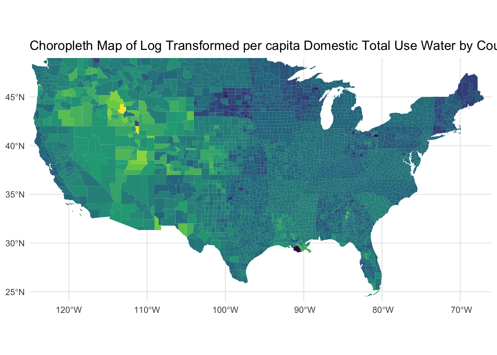
# Compute quantile breaks for Domestic_Total_Use_logbreaks_quantiles <-quantile(us_counties3$Domestic_Total_Use_log, probs =c(0, 0.2, 0.4, 0.6, 0.8, 1))# Plot the choropleth map with the new breakpointsp_contiguous_us_medianincome <-ggplot() +geom_sf(data = us_counties2, aes(fill = Median_Income), color =NA) +scale_fill_viridis_c(breaks = breaks_quantiles[-1], # Omit the first value (0 quantile) for breakslabels =c("Lowest 20%", "20%-40%", "40%-60%", "60%-80%", "Top 20%"),guide =guide_colorbar(title ="Value") ) +theme_minimal() +labs(fill ="Log(Domestic_Total_Use)",title ="Choropleth Map of Median Income") +coord_sf(xlim =c(-125, -66), ylim =c(24, 49), expand =FALSE)# Display the mapprint(p_contiguous_us_medianincome)
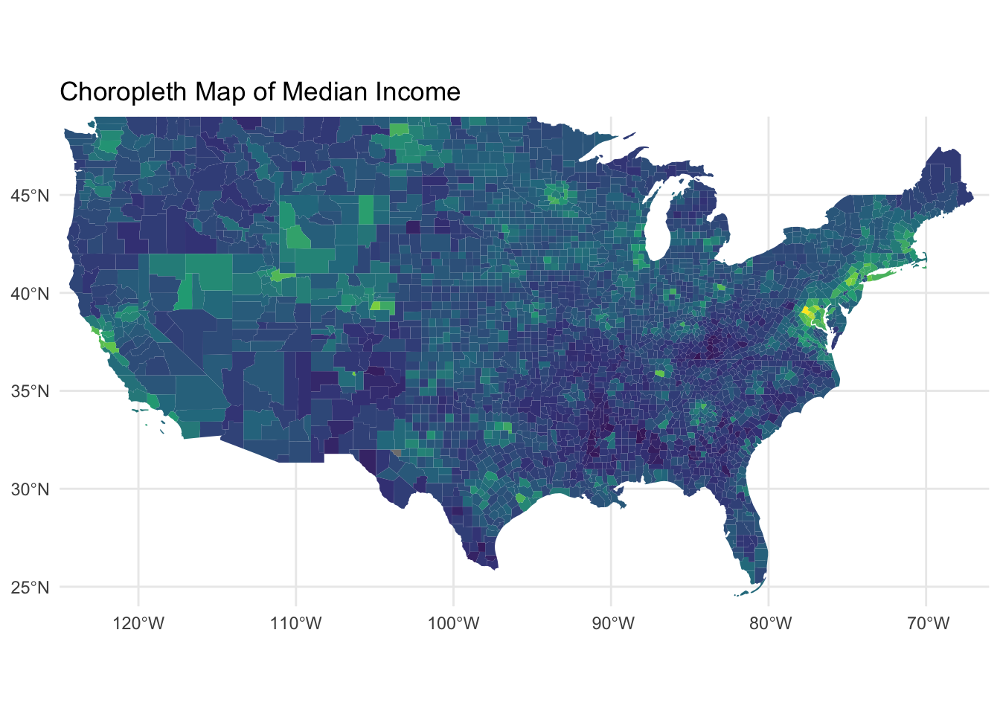
# Compute quantile breaks for Domestic_Total_Use_logbreaks_quantiles <-quantile(us_counties3$Domestic_Total_Use_log, probs =c(0, 0.2, 0.4, 0.6, 0.8, 1))# Plot the choropleth map with the new breakpointsp_contiguous_us_pop <-ggplot() +geom_sf(data = us_counties2, aes(fill =log(Total_Population)), color =NA) +scale_fill_viridis_c(breaks = breaks_quantiles[-1], # Omit the first value (0 quantile) for breakslabels =c("Lowest 20%", "20%-40%", "40%-60%", "60%-80%", "Top 20%"),guide =guide_colorbar(title ="Value") ) +theme_minimal() +labs(fill ="Log(Domestic_Total_Use)",title ="Choropleth Map of population") +coord_sf(xlim =c(-125, -66), ylim =c(24, 49), expand =FALSE)# Display the mapprint(p_contiguous_us_pop)